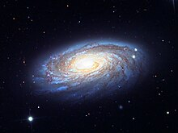
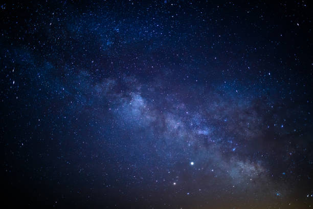
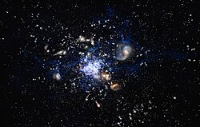

¿Qué es el universo y las galaxias?
StarChild: El Universo
El universo es una enorme extensión de espacio que contiene toda la materia y toda la energía que existe. El universo contiene todas las galaxias, estrellas y planetas. El tamaño exacto del universo es desconocido. Los científicos creen que el universo se encuentran aún en expansión
¿Cuáles son los 4 tipos de galaxias?
Las galaxias tienen cuatro configuraciones distintas: elípticas, espirales, lenticulares e irregulares. Una descripción algo más detallada, basada en su apariencia, es la provista por la secuencia de Hubble, propuesta en el año 1936.
¿Qué es la Vía Láctea?
La Vía Láctea es la galaxia de la cual forma parte el sistema solar, es decir, la galaxia en donde se encuentra la Tierra. Consiste en una gigantesca agrupación de estrellas, planetas y nubes de gas con forma de espiral barrada y un diámetro medio de alrededor de 200.000 años luz. En su centro habita un agujero negro súper masivo, cuya fuerza gravitacional mantiene los cúmulos estelares en una órbita estable.
Es posible percibir la Vía Láctea a simple vista en una noche despejada, como una luz blanca borrosa que se extiende alrededor de la esfera celeste. Esto se debe a que el sistema solar se encuentra en una región apartada del centro, aproximadamente a 25.766 años luz (unos 7900 pársec), en uno de los brazos de la espiral. Al Sol le toma 225 millones de años terrestres completar una vuelta alrededor del centro galáctico.
Por otro lado, el Sol es apenas una de los cientos de miles de millones de estrellas que conforman la Vía Láctea. Estas se encuentran, en su mayoría, dispersas de manera individual o por pares, pero existen también acumulaciones importantes de estrellas conocidas como cúmulos globulares (algunos cerrados y compactos, otros abiertos y más dispersos), algunas de las cuales superan hasta en 50 veces el brillo del Sol.
Se estima que en total la galaxia tiene una masa equivalente a 1012 (o sea 10.000.000.000.000) veces la solar.
Las posibilidades de que desaparezca del sistema solar o de que se desintegre en su acercamiento a la estrella son elevadas. Los días que se podrá visualizar de la mejor manera.
en su camino hacia un encuentro cercano con el Sol. Los investigadores sostienen que es una oportunidad única ya que no se podrá volver a apreciar a simple vista durante, al menos, los próximos 500 años.
Descubierto hace menos de un año, el inofensivo cometa verde es visible en el cielo norteño nocturno con binoculares o pequeños telescopios, y posiblemente a simple vista en los rincones más oscuros del hemisferio norte. Se volverá más brillante a medida que se acerca y se alza más sobre el horizonte hasta el fin de enero. Las mejores horas para verlo serán poco antes del amanecer. Para el 10 de febrero estará cerca de Marte, una buena indicación.
Los aficionados a la astronomía del hemisferio sur deberán esperar al mes próximo para poder vislumbrarlo.
Si bien muchos cometas han adornado el cielo el año pasado, “este parece ser un poco más grande y, por lo tanto, un poco más brillante y se acerca un poco más a la órbita de la Tierra, dijo el gurú sobre cometas y asteroides de la NASA, Paul Chodas.